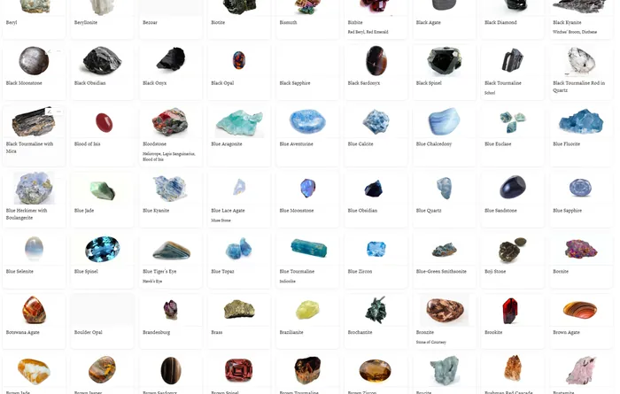

Free Notion template
Blank Crystal Grimoire
Notion Starter Database
Free
- 160+ crystals
- Names & photos, properties ready to fill
- Always free
Before you spend anything, see what it feels like to keep your craft organized in Notion.
This free template gives you the exact structure used in The Magick Muse, which is a clean, minimal, and built for a practice that keeps growing. It comes pre-loaded with the Crystal database: 160+ crystals with names and photos, with pre-set properties ready for you to fill in with your own knowledge and correspondences.
Nothing is pre-filled beyond the names and images. This is your grimoire, built in your voice.
What is inside:
- One fully structured Crystal database, ready to duplicate into your Notion workspace
- Pre-set properties and tags for easy organization
- 160+ crystals with names and photos, and space for all your personal notes, associations, and observations.
This template is always free. Witchcraft knowledge should be accessible to everyone.
Ready to expand your grimoire?
The Blank Framework gives you 14 databases linked together, empty and ready for your own entries.
The Complete Magick Manuscript gives you thousands of researched entries already inside.